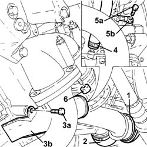
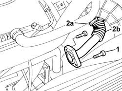
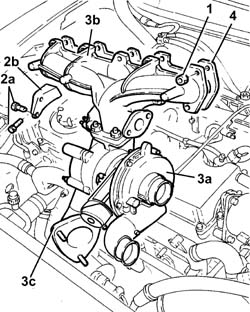

1064A24 TURBOCHARGER - EXHAUST MANIFOLD - HOSE CONNECTED TO EXHAUST PIPE - R.R.
- Path
- Procedures > 10 ENGINE > 1064 ENGINE SUPERCHARGING SYSTEM > 1064A TURBOCHARGER ASSEMBLY > 1064A24 TURBOCHARGER - EXHAUST MANIFOLD - HOSE CONNECTED TO EXHAUST PIPE - R.R.
- Kind
- repair procedure (removal / refitting; the operation number is the code)
- Applies to
- engines: 2.4 JTD 10V; all production periods
- Interactive page
- https://sloeber94.github.io/elrnDB-lThss/en/#/102746
Applies to: all engines; all production periods
 Removing
Removing
 Refitting
RefittingSee in Op. 7055B54 PROTECTION/GUARD under engine - R.R.
1. Disconnect the air inlet house between the turbocharger and the heat exchanger, turbocharger side.
2. Disconnect the turbochrger air inlet hose.
3. Undo the fixing bolts (3a) and remove the protection (3b) for the sump oil return pipe from the turbocharger.
4. Disconnect the sump oil return pipe from the turbochager on the crankcase side.
5. Undo the connector (5a) and disconnect the turbocharger oil supply pipe (5b), crankcase side.
6. Undo the nuts fixing the hose connecting the turbocharger and the exhaust pipe.

Applies to: all engines; all production periods
See in Op. 1016A10
See in Op. 1048A10
See in Op. 1088E10
1. Undo the bolts fixing the rigid exhaust gas supply pipe to the exhaust manifold.
2. Loosen the retaining band (2a) and remove the front section (2b) of the rigid exhaust gas supply pipe.

Applies to: all engines; all production periods
- Disconnect the vacuum pipe from the turbocharger variable geometry management solenoid valve located on the lower crossmember.
1. Undo the nuts fixing the exhaust manifold to the cylinder head.
2. Undo the bolts (2a) fixing the turbocharger mounting bracket (2b) to the crankcase, then remove it.
3. Remove the turbocharger (3a) complete with exhaust manifold (3b) and hose connected to the exhaust pipe (3c).
4. Remove the exhaust manifold gasket from the studs on the cylinder head.

Applies to: all engines; all production periods
Refitting
Removing- Fit the new exhaust manifold gasket in the special housing on the cylinder head.
- Fit the turbocharger-exhaust manifold assembly.
- Tighten the self-locking nuts fixing the exhaust manifold to the cylinder head.
 | Value - daNm | Fastening | Component | Ø |
|---|---|---|---|---|
. | 2.5 | Nuts | EXHAUST MANIFOLD/S | M8 |
- Fit the bracket for the turbocharger and fasten it to the crankcase and to the turbocharger.
- Fit the bracket for the turbocharger and fasten it to the crankcase and to the turbocharger tightening the fastenings to torque.
| Value - daNm | Fastening | Component | Ø |
|---|---|---|---|---|
. | 2.5 | Nut | EXHAUST MANIFOLD RETAINING BRACKET | M8 |
| Value - daNm | Fastening | Component | Ø |
|---|---|---|---|---|
. | 2.5 | Bolts | EXHAUST MANIFOLD RETAINING BRACKET | M8 |
- Connect the vacuum pipe to the turbocharger variable geometry management solenoid valve located on the lower crossmember.
- Fit the front section of the rigid exhaust gas supply pipe and fasten it to the centre section located under the thermostat using the band.
- Tighten the bolts fixing the rigid exhaust gas supply pipe to the exhaust manifold to torque.
| Value - daNm | Fastening | Component | Ø |
|---|---|---|---|---|
. | 2.5 | Bolts | INTAKE VALVE (EGR) EXHAUST GAS PIPE | M8 |
See in Op. 1088E10
See in Op. 1048A10
See in Op. 1016A10
- Tighten the nuts fixing the hose connected to the exhaust pipe to torque.
| Value - daNm | Fastening | Component | Ø |
|---|---|---|---|---|
. | 2.5 | Nuts | SLEEVE TO EXHAUST PIPE | M8 |
- Connect the turbocharger oil supply pipe and tighten the connector to torque.
- Connect the sump oil return pipe to the turbochager on the crankcase side.
- Fit the protection for the turbocharger sump oil return pipe.
- Connect the turbochrger air inlet hose.
- Connect the air inlet house between the turbocharger and the heat exchanger, turbocharger side.